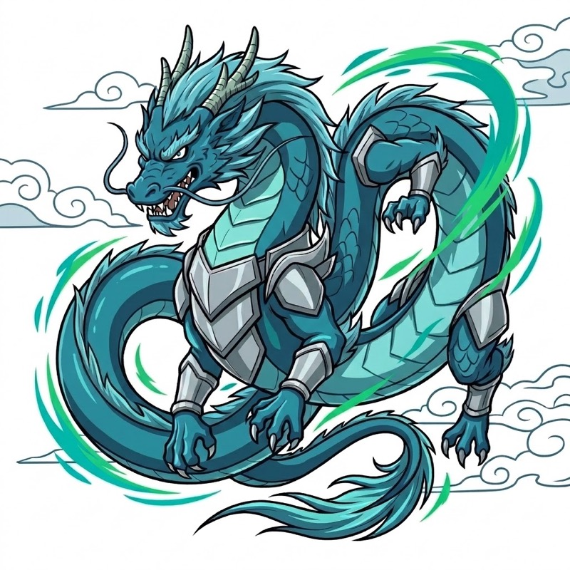
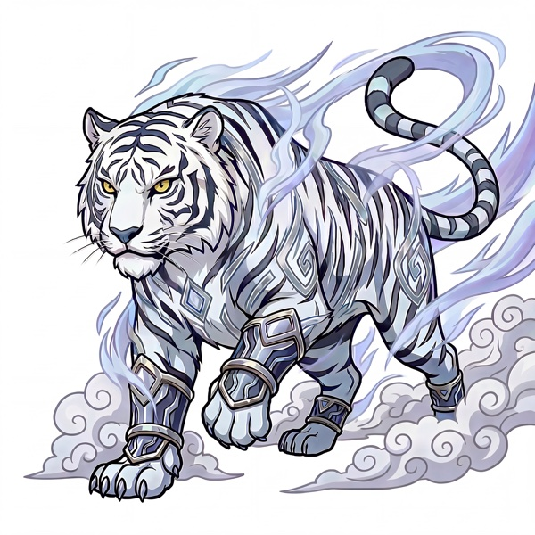

－組織タイプ診断結果－

あなたの利き神タイプ
青龍
青龍タイプ ― イノベーター型組織
新しい世界を構想し、誰より早く動き出す組織。その勢いがやり切る力と結びついたとき、さらに大きな成果に変わります。
青龍型組織は、新しい世界をつくる衝動を原動力に動く組織です。まだ存在しない未来を直感し、考えるより先に動き、動きながら形にしていく。その早さと創造性が、新規事業・変革・挑戦の場面で大きな力になります。
青龍の強みは、出すぎると
弱みに変わります。
いくつ、心当たりがありましたか。
このまま、青龍の勢いだけで
走り続けると、どうなるか。
案件は増え続ける。
社員は疲れていく。
そしてある日、
一番優秀な人から辞めていきます。
青龍型の会社が壁に当たるのは、
業績が落ちたときではありません。
勢いが、
最高潮のときです。
利き神の強みは理解した。
では次に何が必要か。
本当に重要なのは、影神の理解です。
四神診断では、4つの力のうち最も少ない特性を「影神（シャドウ）」と呼びます。
影神は、単なる弱点ではありません。
今の強みだけでは越えられない壁を越えるために必要な力です。
影神（第4位）
── 白虎
青龍の勢いを、成果に変える存在

青龍型組織の強みは、
新しい構想を生み出し、
誰より早く動き出せることです。
一方で、その力が強く出るほど ──
そこで必要になるのが、今回の影神である白虎です。白虎は、青龍の早さを止める力ではありません。
勝てる領域を見極め、やることを絞り、数字と現場をつなぎ、決めたことをやり切る力です。
青龍型組織が次に成長するためには、白虎を取り込む必要があります。
では、青龍の強みを失わずに、どうやって白虎を取り込めばよいのでしょうか。
今回の診断で分かるのは、御社の組織がどの方向に偏っているか、どこに強みがあり、どの力が不足しやすいか──その「現状の構造」です。
白虎が入ると、御社の景色はこう変わります──
走り出した案件が、止まらずに収益になる。その道筋の描き方が、この先です。
ここから先で、次のことが分かります。
これらは、LINE登録後
すぐにお読みいただけます。
御社のタイプ（青龍 × 白虎）に
応じた内容です。
登録は無料です。
経営者・組織責任者の方を対象としています。
いつでも解除できます
© B.essence. All Rights Reserved.